Mıcır
Beton ve altyapı uygulamalarında kullanılan, istenen fraksiyonlarda kırılmış agrega.
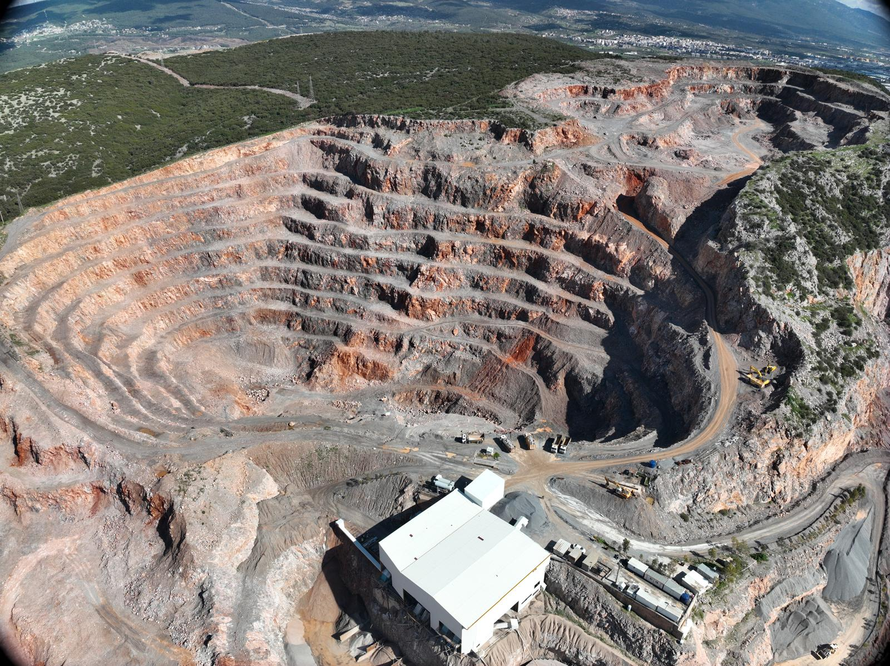
İzmir Bornova ve Urla'daki taş ocağı sahalarımızda, kırma eleme tesislerimizle agrega, mıcır, mıcır tozu, stabilize ve dolgu malzemesi üretimi yapıyoruz.
Beton, asfalt, altyapı, yol ve dolgu projeleri için farklı tane boylarında agrega üretimi.
Beton ve altyapı uygulamalarında kullanılan, istenen fraksiyonlarda kırılmış agrega.
Beton, asfalt ve saha düzenleme işlerinde kullanılan ince taneli üretim.
Yol ve zemin iyileştirme çalışmalarında tercih edilen dengeli karışım.
Altyapı ve saha dolgularında ekonomik, dayanıklı ve sürekli tedarik edilebilir çözüm.
| Ürün | Ölçü / Fraksiyon |
|---|---|
| Mıcır Tozu | 0-3 mm |
| İnce Agrega | 0-5 mm |
| Mıcır / Kırmataş | 5-12 mm |
| Mıcır / Kırmataş | 12-22 mm |
| Dolgu Taşı | 20-70 mm |
| Kireçtaşı | Proje talebine göre |
| Duvar Taşı | Proje talebine göre |
Kurulduğu yıldan beri madencilik sektörünün içinde olan Bemaş, İzmir Bornova ve Urla'da iki taş ocağı ve kırma eleme tesisiyle hizmet vermektedir.
Öncelikli hedefimiz, belirli bir üretim seviyesi ve kalite standardına ulaştıktan sonra üretilen agregayı ihracatta veya Türkiye pazarında değerlendirmektir. Yeni projelerle rezerv geliştirme çalışmalarımızı sürdürüyoruz.
Bemaş, İzmir Bornova ve Urla'daki iki aktif ocak ve üretim tesisiyle hem iç pazar hem de ihracat projeleri için agrega, mıcır, kireçtaşı, kırmataş, mıcır tozu, dolgu taşı ve duvar taşı tedariği sağlar.
Bornova ve Urla tesisleri, İzmir ve Ege Bölgesi projeleri için sürekli üretim ve sevkiyat kapasitesi sunar.
Her iki tesisten de Alsancak Limanı ve Aliağa liman altyapısına nakliye yapılabilir.
Uluslararası müşteriler için proje bazlı tedarik, sevkiyat ve uygun fraksiyonlarda üretim desteği sağlanabilir.
3 vardiya ve 24 saat çalışma esasına göre Bornova tesisimiz 750 ton/saat ve yaklaşık 6.570.000 ton/yıl, Urla tesisimiz ise 600 ton/saat ve yaklaşık 5.256.000 ton/yıl kapasiteyle üretim yapar.
Bornova ve Urla ocaklarımızda üretim, ekipman ve saha organizasyonu ayrı ayrı planlanır.
Yıllık değerler 3 vardiya, 8'er saat ve 365 gün üzerinden hesaplanmıştır.
750 ton/saat ve yaklaşık 6.570.000 ton/yıl üretim kapasitesiyle İzmir Bornova sahasında hizmet veriyoruz.
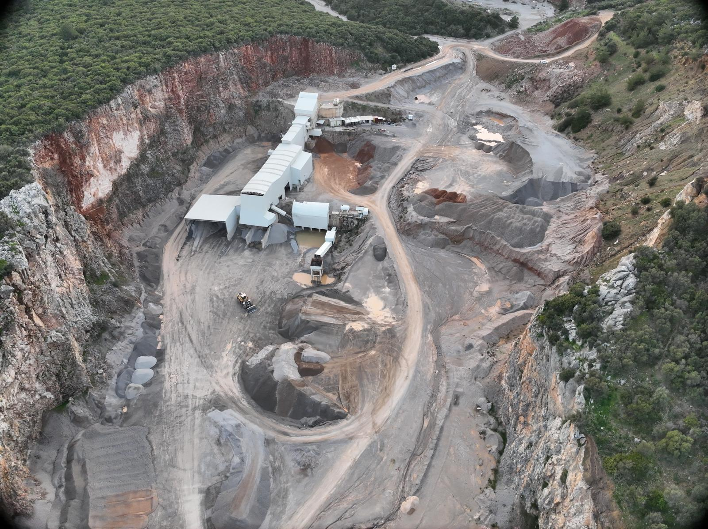
600 ton/saat ve yaklaşık 5.256.000 ton/yıl üretim kapasitesiyle Urla sahasında agrega üretimi yapıyoruz.
Urla kırma eleme tesisimizden saha ve üretim alanı görüntüleri.
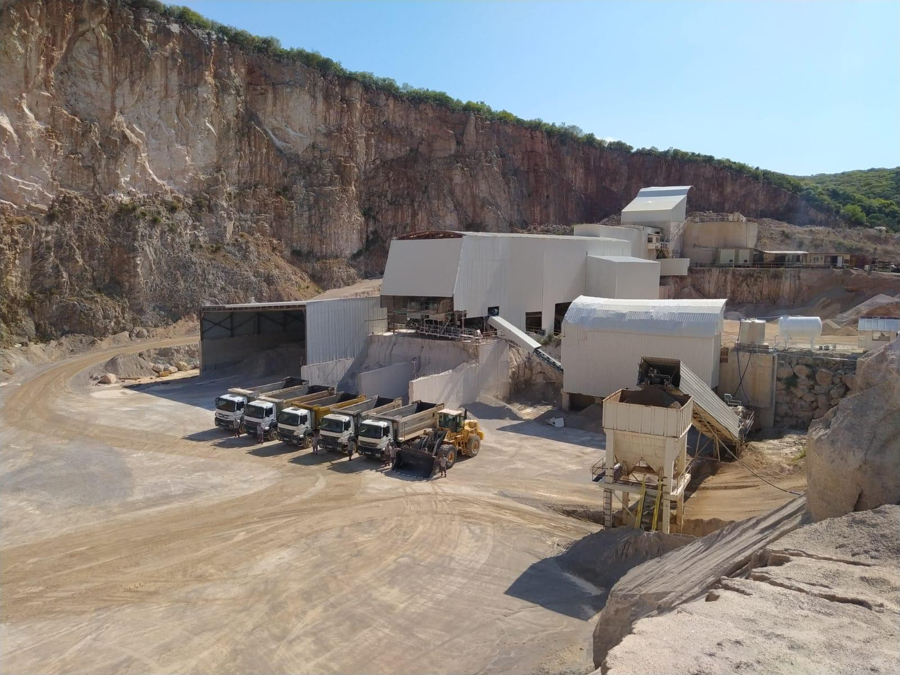
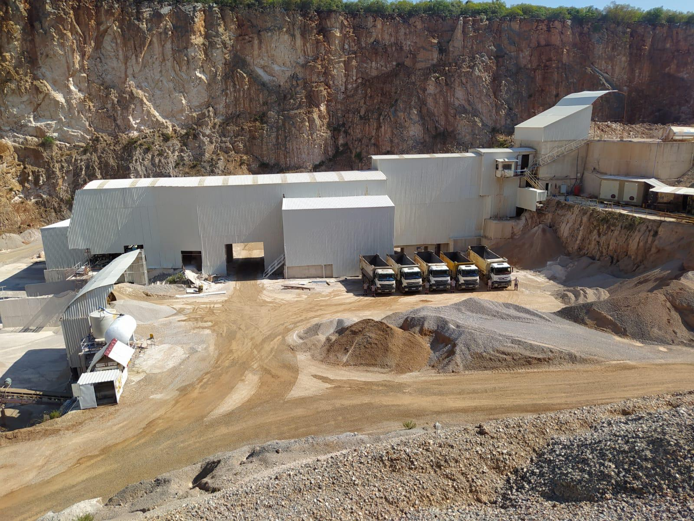
Ocak içi yükleme, kırma-eleme besleme ve stok sahası hareketleri, proje programlarına göre organize edilen kamyon, ekskavatör, yükleyici ve arazöz ekipmanlarıyla yürütülür.
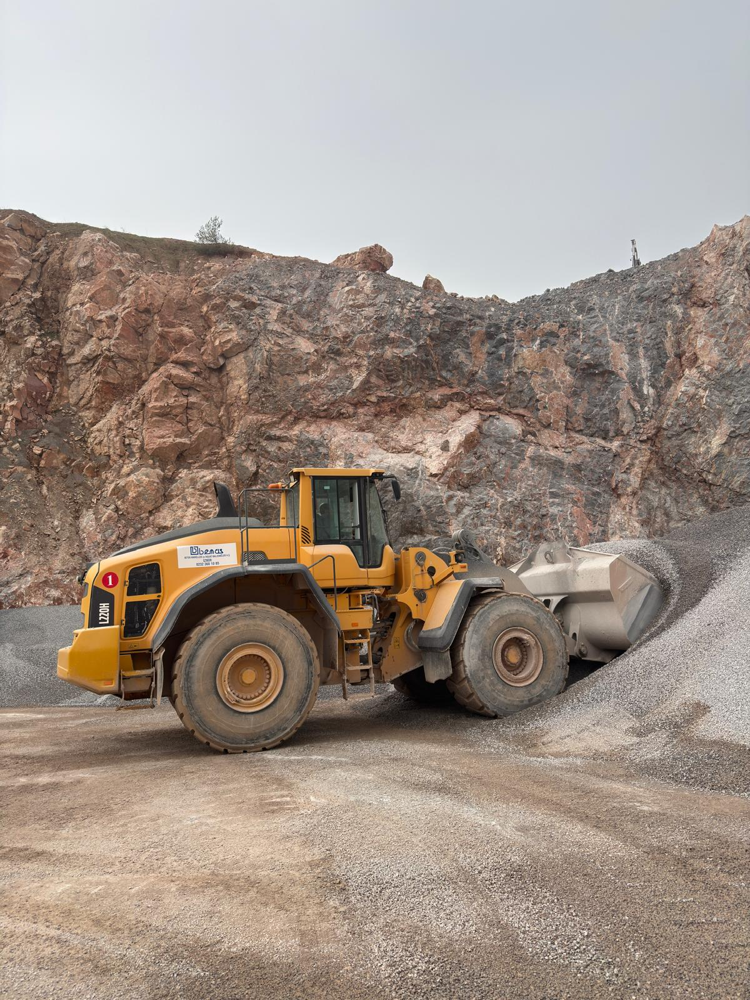
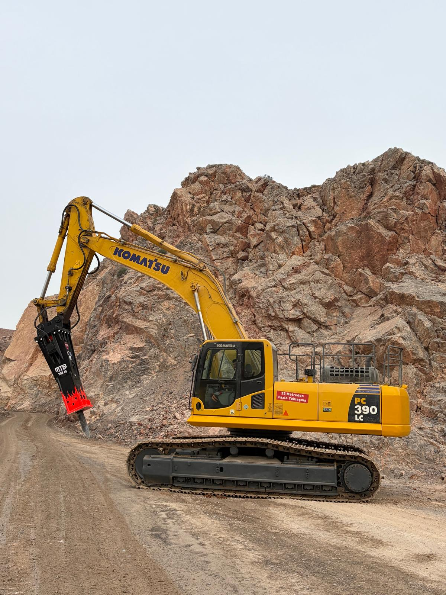
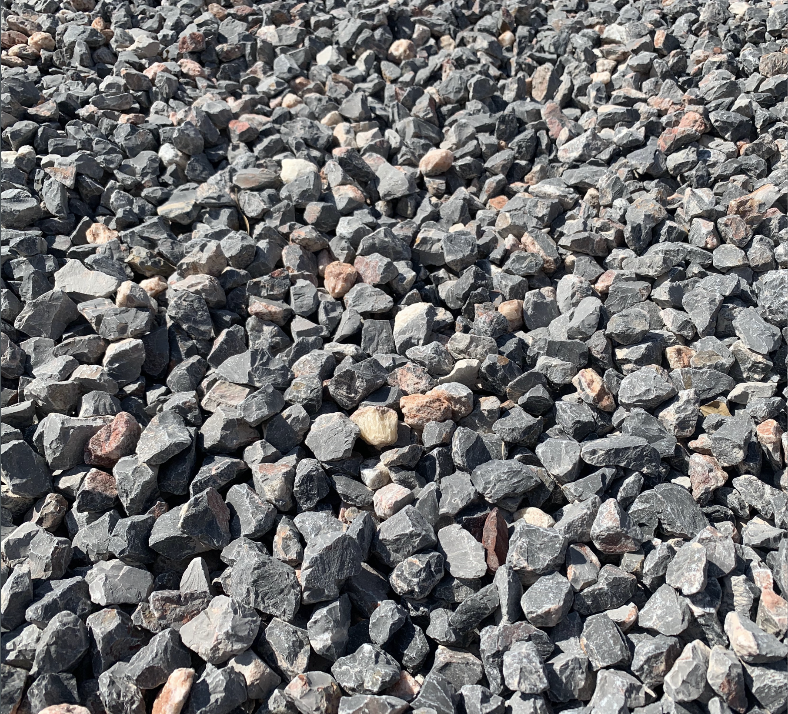
Hammadde seçiminden sevkiyata kadar her aşama proje standardına uygun ürün sürekliliği için takip edilir.
Ocak sahalarından kontrollü hammadde tedariği.
Birincil ve ikincil kırma aşamalarıyla boyut küçültme.
Farklı fraksiyonlar için çok katlı sınıflandırma.
Ürün gruplarının ayrı sahalarda düzenli stoklanması.
Proje ihtiyacına göre planlı ve zamanında teslimat.
Ege Bölgesi Sanayi Odası ve İzmir Ticaret Odası tarafından verilen ödül ve takdirnameler.
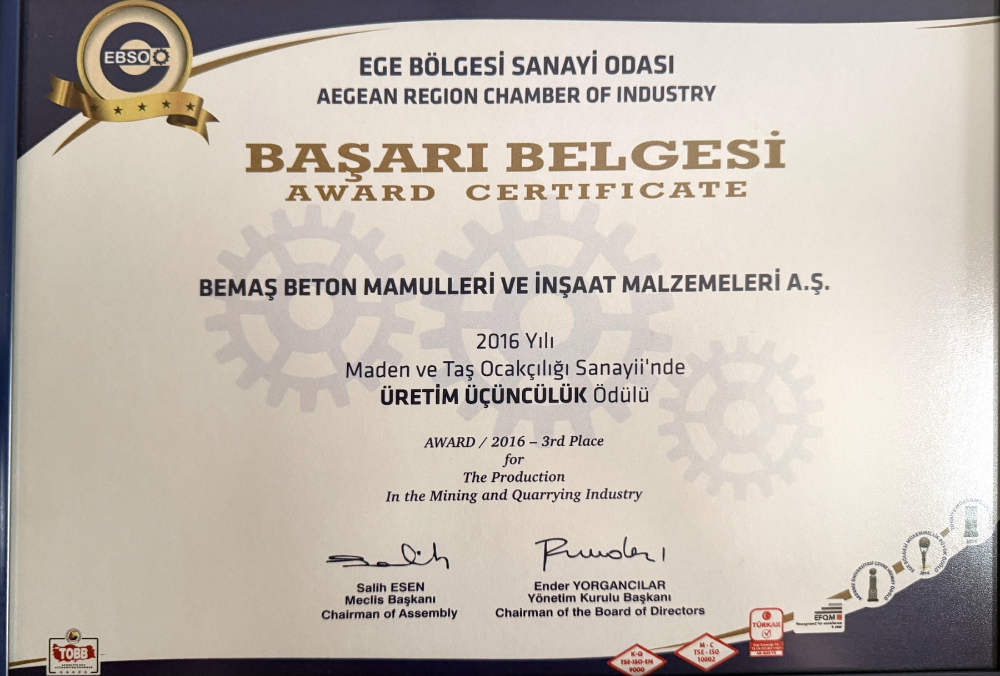
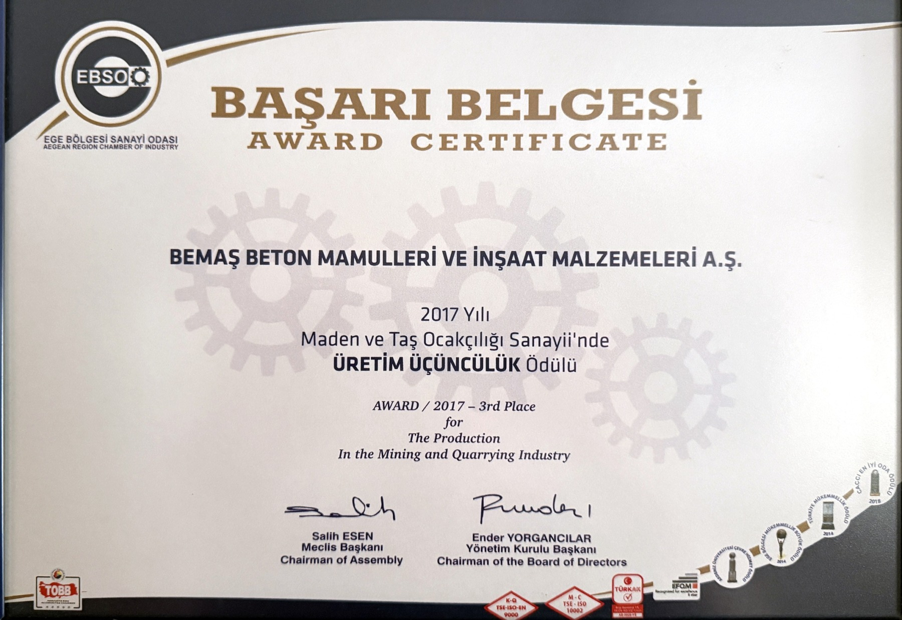
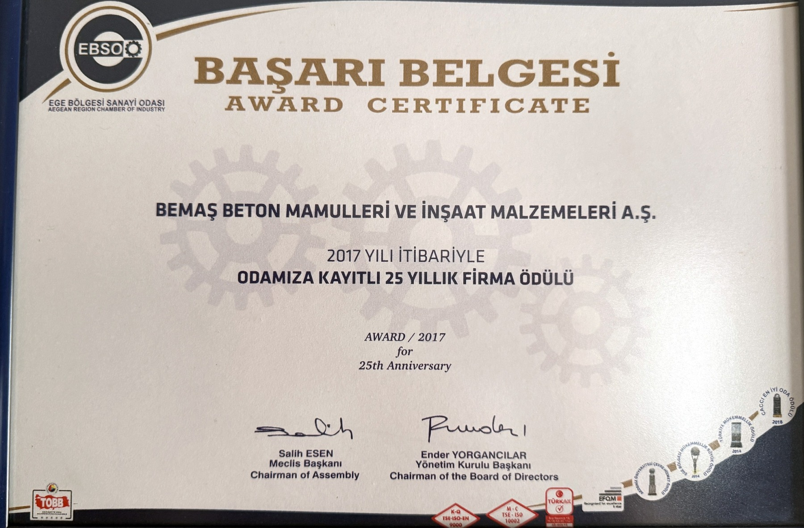
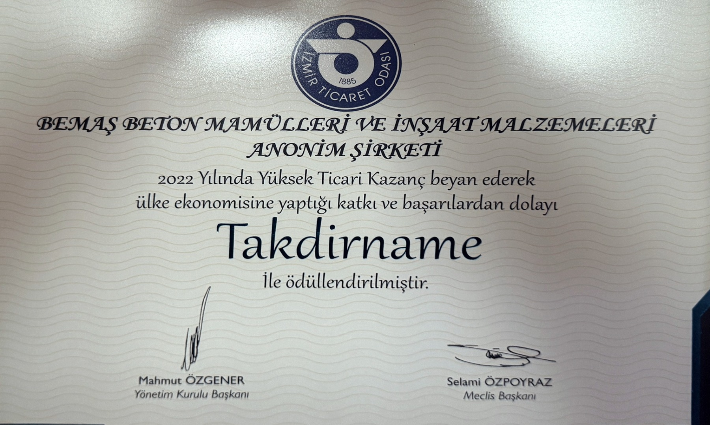
İzmir ve Ege Bölgesi'nde beton santrali ve yapı malzemeleri sektöründe çalıştığımız firmalardan bazıları.
Bornova merkez adresimizden veya telefon hattımızdan Bemaş ekibine ulaşabilir, agrega ve mıcır talepleriniz için bilgi alabilirsiniz.